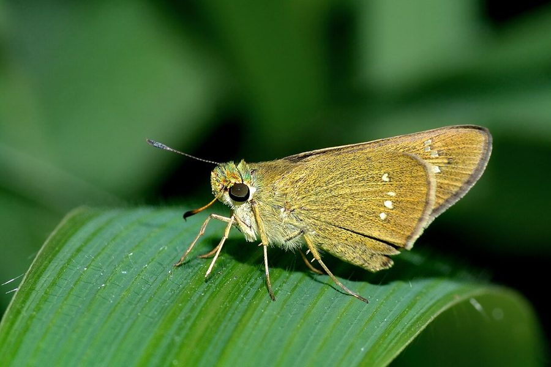

राइस स्विफ़्ट तितलीRice Swift
Borbo cinnara · Hesperiidae · INS-0135

- Scientific name वैज्ञानिक नाम
- Borbo cinnara (Wallace, 1866)
- Family कुल
- Hesperiidae
- Hindi हिंदी
- राइस स्विफ़्ट तितली
- Local names स्थानीय नाम
- rice swift, swift
- Status here यहाँ की स्थिति
- native
- Movement आवागमन
- Resident, here all year
- Known from कहाँ दर्ज
- Others have published records from the wider Awadh–Purvanchal plain, none yet from Basti–Ayodhya अवध–पूर्वांचल से दूसरों के प्रकाशित अभिलेख, बस्ती–अयोध्या से अभी नहीं
- IUCN IUCN
- not evaluated
- Review समीक्षा
- audited and independently read
When to look कब देखें
Present all year. साल भर मौजूद।
Tell it apart from इनसे अलग पहचानें
राइस स्विफ़्ट तितली / Rice Swift
Borbo cinnara (Wallace, 1866) — Hesperiidae
राइस स्विफ़्ट तितली — एक छोटी भूरी तितली जो धान के खेतों और घास के मैदानों में पाई जाती है। इसकी उड़ान बहुत तेज़ होती है, इसलिए इसे "स्विफ्ट" कहते हैं। इसका कैटरपिलर धान और दूसरी घासों की पत्तियों को खाता है। यह तितली साल भर रहती है लेकिन बरसात और फसल के मौसम में बहुत आम होती है।
Quick Identification त्वरित पहचान
| Feature | Description |
|---|---|
| Size | Small butterfly, wingspan 22-26 mm |
| Colour | Dull brown to dark brown with fulvous (reddish-brown) patches |
| Pattern | Irregular fulvous markings on wings; underside paler |
| Spots | Small distinct spots on wings, particularly on hindwings |
| Flight | Very rapid, darting flight; difficult to follow |
| Behaviour | Stays low in grass; settles frequently on grass stems |
Field tip: A small, rapid butterfly with dull brown colour and reddish-brown patches. Very fast flier. Look for it in rice paddies and grasslands, especially during the monsoon growing season. Often seen settling on grass stems.
हिंदी — कैसे पहचानें: भूरी तितली, तेज़ उड़ान। घास पर बैठी। नारंगी-भूरे धब्बे।
Morphology आकारिकी
Biometrics:
| Measurement | Range |
|---|---|
| Wingspan | 22-26 mm |
| Forewing length | 11-13 mm |
| Body length | 8-10 mm |
Wings:
- Upperside: Dull brown to dark chocolate-brown ground colour with irregular fulvous or reddish-brown patches and markings; distinctive pattern across forewings and hindwings.
- Underside: Paler, often greyish-brown, with similar but less distinct patterns; hindwings often lighter.
Body: Brown; antennae clubbed, relatively simple.
Sexual dimorphism: Males and females are similar; females may be slightly larger.
Cryptic coloration: The dull, mottled coloration helps the butterfly blend with dried grass and soil.
Life Cycle / Phenology जीवन चक्र
| Stage / Month | Event |
|---|---|
| January–December | Year-round; multiple overlapping generations |
| Egg | Laid on rice and grass; incubation 5-7 days |
| Larva | Green caterpillar; feeds on rice leaves and grass blades; 2-3 weeks |
| Pupa | Small, greenish-brown; formed among grass stems or leaf bases; 5-10 days |
| Adult | 2-4 weeks lifespan; very active during rice-growing season (June–October) |
| Peak season | June–October during monsoon and grain harvest |
हिंदी: साल भर। बरसात में सबसे ज़्यादा। धान की पत्ती पर हरा कैटरपिलर।
Host Plants or Prey आहार
Larval host plants:
- Rice (Oryza sativa)
- Various wild and cultivated grasses: Brachiaria mutica, Sorghum bicolor, and other grass species
Adult food sources:
- Nectar from flowers
- Sap from fermenting matter
- Damp spots on ground
Predators / Natural Enemies शत्रु
- Spiders: Web-building spiders in rice paddies
- Small birds: Warblers and other rice-paddy birds
- Parasitoid wasps: Parasitise caterpillars and pupae
- Ants: May predate pupae
Agricultural / Human Relevance कृषि प्रासंगिकता
Minor pest status. The caterpillars feed on rice leaves and other cultivated grasses but rarely cause economically significant damage. In some regions, considered a minor pest in rice cultivation.
Grain crop association. Common in rice paddies, wheat fields, and other grain crops during the growing season. The butterfly indicates healthy grass and grain growth.
Abundance. The species is recorded throughout India in grain-growing regions. In eastern UP, it would be expected wherever rice is cultivated.
Today. Common during the monsoon and post-monsoon grain-growing seasons in agricultural areas.
हिंदी: धान के खेतों में आम। नुकसान बहुत कम।
Expected Locally स्थानीय रूप से अपेक्षित
Not a field record. Written from published accounts for eastern Uttar Pradesh. No confirmed local sighting yet — if you have seen it, that is what the atlas needs.
अभी तक स्थानीय पुष्टि नहीं। यह विवरण प्रकाशित स्रोतों से है, किसी अवलोकन से नहीं।
To be expected year-round in rice paddies, grasslands, and grain-growing areas throughout the region, with peak abundance during the monsoon and grain-growing season (June–October). Look in rice fields, grasslands, and near cultivated grain crops. A photograph with date and location would confirm a local record.
Distribution वितरण
Global range: Sri Lanka, India, Myanmar, Vietnam, Cambodia, Taiwan, Australia.
In India: Distributed throughout the country in rice-growing and grassland regions; recorded in most states.
In Uttar Pradesh: Found in grain-growing regions throughout the state; common in rice paddies and grasslands.
In Basti district / eastern UP: Expected in rice paddies, grasslands, and grain-growing areas year-round, particularly abundant during monsoon and grain harvest (June–October).
Research Questions शोध प्रश्न
Anyone can investigate these | कोई भी इन प्रश्नों की जाँच कर सकता है
- How many generations of Rice Swift occur in Basti rice paddies per year? / धान के खेतों में एक साल में कितनी पीढ़ियाँ होती हैं? — Track pupae emergence throughout the year.
- Does the abundance of Rice Swift correlate with rice paddy flooding and water level? — Compare butterfly abundance with paddy water conditions.
- Can you find the green caterpillars on rice plants during the growing season? / क्या आप धान की फसल पर हरे कैटरपिलर खोज सकते हैं? — Search rice plants systematically.
- What percentage of caterpillars are parasitised by wasps in local rice paddies? — Collect pupae and rear them indoors.
- How quickly can a Rice Swift fly compared to other small butterflies in the region? — Observe flight speed and style.
Similar Species मिलती-जुलती प्रजातियाँ
| Species | How to tell apart | हिंदी | |
|---|---|---|---|
| Pelopidas mathias ([[dark_small_branded_swift\ | Dark Small Branded Swift]]) | Very similar; slightly smaller; darker overall; different wing pattern details; requires close examination | डार्क स्विफ़्ट — छोटी, और काली |
| Other Hesperiidae (skippers) | Generally larger or with different colour patterns; different habitat preferences | दूसरे स्किपर |
Field rule: A small, dull brown butterfly with reddish-brown patches, very rapid flier staying low in grass and rice paddies, is the Rice Swift.
Taxonomy & Classification वर्गीकरण
Original description. Described by Wallace in 1866. Type locality: India.
Subspecies. The subspecies found in India is Borbo cinnara cinnara (Wallace, 1866).
Family and order placement. Order Lepidoptera, family Hesperiidae (skippers), subfamily Hesperiinae. The genus Borbo includes swift skippers specialized for grass habitats.
Phylogenetic notes. Hesperiidae butterflies are characterized by rapid flight and strong wings, adaptations for survival in open grassland habitats.
IUCN status rationale. Not formally assessed. Abundant and widespread; no conservation concerns.
Photo Gallery फोटो गैलरी
No photos yet — add field photos to media/species/rice_swift/ and run node scripts/sync_photos.js.
Wanted:
- Adult showing dull brown colour with fulvous patches
- Underside view
- Adult on grass stem in rice paddy
- Caterpillar on rice leaf
- Adult in flight (if possible)
- Wet and dry season forms
References संदर्भ
- Wallace, A.R. (1866). On the Lepidoptera of the Eastern Indian Archipelago. In: Proceedings of the Zoological Society of London. [original description]
- Kunte, K. (2009). Butterflies of Peninsular India. Universities Press, Hyderabad.
- Kehimkar, I. (2016). BNHS Field Guide: Butterflies of India. Bombay Natural History Society, Oxford University Press, Mumbai.
- Indian Foundation for Butterflies. Checklist of Indian Hesperiidae and Host Plants. Retrieved from https://www.ifoundbutterflies.org
- Wynter-Blyth, M. A. (1957). The Butterflies of India. 2nd edition. Bombay Natural History Society.
- GBIF Occurrence Data — Borbo cinnara, Asia (2023). GBIF taxon key: [to be filled].
Source file: species/fauna/insects/rice_swift.md